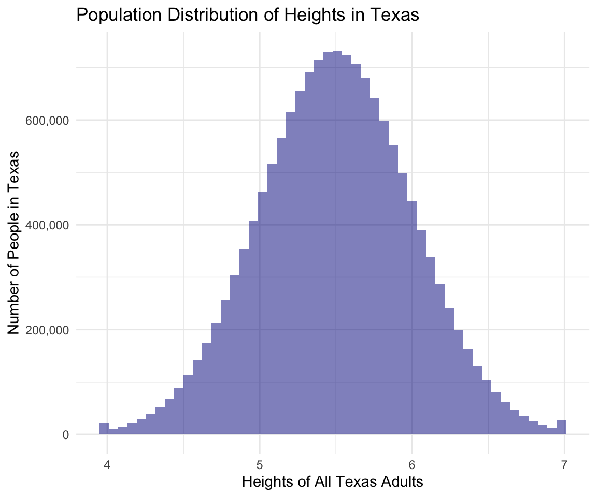

library(tidyverse)
library(knitr)Distributions
There are three kinds of distributions:
Population Distribution
There are around 15 million adults in Texas and I am interested in estimating the average height of all adult Texans. I cannot go out and measure everyone’s height due to financial, capacity constraints etc.
For the sake of this example, I am going to draw up a hypothetical population distribution of heights of all people in Texas. Below is a histogram showing the distribution of the heights across all adults in the population:
options(scipen = 10000)
set.seed(04302021)
# i am setting min 4 and max 7
heights <- tibble(heights = pmax(4, pmin(7, rnorm(n = 15000000, mean = 5.5, sd = .5))))
ggplot(heights, aes(x = heights)) +
geom_histogram(alpha = 0.5,
bins = 50,
fill = "blue4") +
scale_y_continuous(labels = scales::comma) +
labs(x = "Heights of All Texas Adults",
y = "Number of People in Texas",
title = "Population Distribution of Heights in Texas") +
theme_minimal()
The population distribution is the distribution of heights of all adults in Texas.
The mean of the distribution is 5.5 and the standard deviation of the distribution is 0.499. These are the population parameters:
mean(heights$heights)
sd(heights$heights)The heights range from 4 to 7 ~ this is the range of true heights in the population, which we won’t typically know because we don’t go out and measure heights of 15 million people.
Sample Distribution
I can’t go out and measure everyone in the population so I take a sample of 10. Here is the distribution of heights in that sample:
set.seed(05012021)
sample_1 <- tibble(heights = sample(heights$heights, size = 10))
ggplot(sample_1, aes(x = heights)) +
geom_histogram(alpha = 0.5,
bins = 10,
fill = "darkolivegreen") +
scale_y_continuous(breaks = seq(1, 3, 1)) +
labs(x = "Heights of People in My Sample",
y = "Number of People in the Sample",
title = "Distribution of Heights in My Sample") +
theme_minimal()The sample distribution is the distribution of heights in my sample.
The mean of the sample of heights is 5.482 and the standard deviation is 0.593. This is the sample mean and the sample sd, the sample statistics. The sample mean is not going to be exactly the same as the population parameter and will differ from sample to sample.
mean(sample_1$heights)
sd(sample_1$heights) Confidence Intervals
First sample
Below is the the 95% confidence interval of the sample mean of the sample I drew above of 10 people:
calculate_ci <- function(m, sd, n = 10){
se <- sd / sqrt(n)
ci <- m + c(-1, 1) * 1.96 * se
tibble(mean = m,
ci_l = ci[1],
ci_u = ci[2])
}
m_s1 <- mean(sample_1$heights)
sd_s1 <- sd(sample_1$heights)
calculate_ci(m = m_s1, sd = sd_s1) %>%
kable(digits = 3) | mean | ci_l | ci_u |
|---|---|---|
| 5.482 | 5.114 | 5.85 |
In this example, the true population mean is in the CI. Note that the CI does not capture the range of the heights in the population (which is 4 to 7).
Another sample
I take another sample and estimate the mean and CI:
set.seed(05022021)
sample_2 <- tibble(heights = sample(heights$heights, size = 10))
m_s2 <- mean(sample_2$heights)
sd_s2 <- sd(sample_2$heights)
calculate_ci(m = m_s2, sd = sd_s2) %>%
kable(digits = 3) | mean | ci_l | ci_u |
|---|---|---|
| 5.592 | 5.192 | 5.992 |
This CI contains 5.5. Notice that the mean is close to 5.6 which is a bit different from the population parameter 5.5, and different from the sample mean of the first sample.
Extreme sample
I take another sample and this time I am not so lucky and draw 10 quite tall people by chance. I calculate the mean and the CI:
tall_folx <-
heights %>%
filter(heights > 6)
set.seed(05032021)
sample_3 <- tibble(heights = sample(tall_folx$heights, size = 10))
m_s3 <- mean(sample_3$heights)
sd_s3 <- sd(sample_3$heights)
calculate_ci(m = m_s3, sd = sd_s3) %>%
kable(digits = 3) | mean | ci_l | ci_u |
|---|---|---|
| 6.216 | 6.086 | 6.345 |
This CI definitely doesn’t capture the 5.5 average population height. It doesn’t say anything about the true population height which we know is 5.5.
The sample mean here is different from the sample mean of the first two samples and different from the population parameter 5.5.
In applied analysis, we won’t know what the true mean is so we won’t know if the CI contains the true mean.
Thought exercise
Now as would happen in applied analysis, pretend that we don’t know 5.5 is the true mean. How would we know if CI’s from sample 1, sample 2, and sample 3 contain the true parameter? We wouldn’t know.
Sampling Distribution
Now I have data from a sample and want to use that data to infer something about a population. The sample is typically much smaller in size than the population, 10 people vs 15 million people in this example, so how do I measure how certain we are about the estimate derived from the sample?
To measure the uncertainty in my estimated height, I would rely on something called the sampling distribution. Below is a histogram showing the the distribution of 10,000 sample means from 10,000 samples drawn randomly from the population each with sample size of 10.
set.seed(05042021)
samples_ci <-
rerun(10000, {
x <- sample(heights$heights, size = 10)
m <- mean(x)
sd <- sd(x)
n <- 10
tibble(mean = m,
ci_l = m - 1.96 * sd/ sqrt(n),
ci_u = m + 1.96 * sd/ sqrt(n))
}) %>%
bind_rows()Warning: `rerun()` was deprecated in purrr 1.0.0.
ℹ Please use `map()` instead.
# Previously
rerun(10000, {
x <- sample(heights$heights, size = 10)
m <- mean(x)
sd <- sd(x)
n <- 10
tibble(mean = m, ci_l = m - 1.96 * sd / sqrt(n), ci_u = m + 1.96 * sd / sqrt(
n))
})
# Now
map(1:10000, ~ {
x <- sample(heights$heights, size = 10)
m <- mean(x)
sd <- sd(x)
n <- 10
tibble(mean = m, ci_l = m - 1.96 * sd / sqrt(n), ci_u = m + 1.96 * sd / sqrt(
n))
})samples_ci %>%
ggplot(aes(x = mean)) +
geom_histogram(alpha = 0.5,
bins = 50,
fill = "dark red") +
labs(x = "Average Heights from Different Samples",
y = "Number of Samples",
title = "Distribution of Average Sample Heights") +
theme_minimal()This distribution is different from the population distribution. It is not the distribution of heights of all people. It is the distribution of means estimated from different samples - a lot of different samples. And note that I am not drawing all possible samples. I am only drawing 10,000 samples.
The sampling distribution is the distribution of a statistic (e.g., sample mean) across all possible samples.
In applied analysis, we don’t know what the sampling distribution is as we won’t be able to take repeated samples infinite number of times. Statistical models and assumptions help us get at the sampling distribution which then lets us measure uncertainty in our estimates.
Standard error - measure of uncertainty
The standard deviation of the sampling distribution is the standard error. The standard error indicates how precise or certain a statistic is. In applied analysis, we typically estimate the standard error using statistical models and assumptions.
What is precision?
Precision, in statistics, captures the variability of sample means - deviation of sample means from the mean of sample means. Precision is the opposite of standard error ~ small standard error = high precision. Note that we don’t know the true standard error we estimate it too :D
CI’s of Sample Means in Sampling Distribution
In the graph of the sampling distribution above, some of the sample means are way out there. For example, there are some near 6. The table below shows 5 of these sample means and their corresponding CIs. The CIs don’t contain 5.5, the true mean.
samples_ci %>%
filter(mean > 5.9) %>%
tail(n = 5) %>%
kable(digits = 3) | mean | ci_l | ci_u |
|---|---|---|
| 5.911 | 5.566 | 6.257 |
| 5.948 | 5.565 | 6.331 |
| 5.929 | 5.625 | 6.234 |
| 5.929 | 5.622 | 6.236 |
| 5.922 | 5.529 | 6.315 |
Below are the sample means and CI’s at the lower end of the distribution. These CI’s also don’t contain 5.5.
samples_ci %>%
filter(mean < 5) %>%
tail(n = 5) %>%
kable(digits = 3) | mean | ci_l | ci_u |
|---|---|---|
| 4.988 | 4.711 | 5.265 |
| 4.914 | 4.733 | 5.095 |
| 4.979 | 4.621 | 5.336 |
| 4.981 | 4.702 | 5.261 |
| 4.976 | 4.729 | 5.224 |
Note here that the means at the extreme ends of the sampling distribution are from simple random samples of the population. So in real applied analysis, we could get one of those samples with extreme heights by chance and our CI won’t capture the true mean.
Thought exercise
Now as would happen in applied analysis, pretend that we don’t know 5.5 is the true mean. How would we know any of these 10,000 CI’s contain the population parameter? We wouldn’t.
What is CI then?
I calculated CIs above when I drew samples from the population. But what is a CI?
In repeated sampling as above, if I were to create confidence intervals around each of the means, approximately 95% of them would capture the true population mean 5.5.
The proportion of CI’s from the 10,000 samples that I drew above that contain the true parameter is:
samples_ci <-
samples_ci %>%
mutate(captures = ifelse(5.5 < ci_u & 5.5 > ci_l, TRUE, FALSE))
samples_ci %>%
summarize(prop = mean(captures),
n = sum(captures)) %>%
kable(digits = 3) | prop | n |
|---|---|
| 0.914 | 9144 |
The proportion is close to 95%. Also note that I would need to take infinite number of samples to get close to 95%.
Note that the CI takes the following form:
\[CI = estimate \pm critical \times se\]
CI’s are built around an estimate plus and minus a critical value (like 1.96 for z normal distribution) times the standard error. The width of the CI is dependent on the standard error - which indicates how precise an estimate is.
CI’s are not built around the mean of the sample means (i.e., the center of the sampling distribution). If we knew what the sampling distribution was and what the center was and built CI around that center then we would capture where 95% of all the sample means fall. But, we don’t know what the sampling distribution is and only have one sample that could be in the center of the sampling distribution but by random chance could also be on the ends of the sampling distribution or could be a bit to the left or right of the center. We won’t know. The CI is built around that one sample statistic; therefore, the CI does not give us the range of possible means.
What does CI tell me?
The width of the confidence intervals tells me how precise the estimate is. When sample size is small, we won’t get very precise estimates. Estimated average heights will be too noisy, too different from sample to sample. When sample size is large, estimated average heights will be more precise. The table below shows mean and CIs calculated from a random sample of 5 people and from another random sample of 1000 people from the population distribution of heights.
set.seed(05052021)
small_s4 <- sample(heights$heights, size = 5)
m_s4 <- mean(small_s4)
sd_s4 <- sd(small_s4)
n_s4 <- length(small_s4)
set.seed(05062021)
large_s5 <- sample(heights$heights, size = 1000)
m_s5 <- mean(large_s5)
sd_s5 <- sd(large_s5)
n_s5 <- length(large_s5)
small <- calculate_ci(m = m_s4, sd = sd_s4, n = n_s4) %>%
mutate(n = n_s4)
large <- calculate_ci(m = m_s5, sd = sd_s5, n = n_s5) %>%
mutate(n = n_s5)
bind_rows(small, large) %>%
mutate(width = ci_u - ci_l) %>%
select(n, everything()) %>%
kable(digits = 3)| n | mean | ci_l | ci_u | width |
|---|---|---|---|---|
| 5 | 5.592 | 5.266 | 5.919 | 0.654 |
| 1000 | 5.490 | 5.459 | 5.521 | 0.062 |
In the example above, for the sample with \(n = 5\), the CI is wide compared to the CI from the sample with \(n = 1000\). When we take a small sample, sample means from repeated samples will tend to vary more - we are less certain about the estimate - the estimate is less precise - the CI is wide.
For the sample with \(n = 1000\), you can see that the CI is not as wide as in the case where \(n = 5\). When we take a large sample, sample means from repeated samples will tend to vary less - we are more certain about the estimate - the estimate is more precise - the CI is narrow.
No matter how narrow or wide the CI is, with repeated sampling, only 95% of the CIs calculated will capture the true mean.
What does it all mean?
Precision just tells us that if we were to take repeated samples will the sample means be close to each other or really all over the place.
What does the CI not tell me?
The CI is built around an estimate. It doesn’t say anything about the range of heights of all adult population of Texas, for example.
Also in applied analysis, we don’t know the true population mean. We only know that if we were to take infinite repeated samples of the same size under the same-ish condition and construct CI’s around the estimated means, 95% of the intervals will capture the true population mean. How do I know if the interval I created is one of the 95% that do capture the true mean or the one of the 5% that don’t capture the true mean. I don’t. Therefore, from the CI itself I don’t know the location of the true mean.
CI also does not say anything about my psychological level of confidence.
How do I know then if my estimate is close to the true mean?
Well you don’t, you just assume you do :) (A version of this joke was told to me by Rob Santos).
We methodologists study methods under known data generating conditions and we study them under conditions where certain assumptions or conditions hold and when they don’t. We generate tens of thousands of samples ~ approximately creating the sampling distribution. From simulations, we measure accuracy, bias, precision etc. and we can measure those because we generate data based on true parameters that are known to us.
Then we recommend what method should be used under what conditions. This is why it is important to evaluate whether assumptions hold or not when you are running analyses :) Those assumptions can tell you how close the estimate is to the true mean.
Wait what is precision, accuracy, bias?

Consider the image above. The center of the dart board is the population parameter, the population average height of 5.5. Each of the dart is a sample and where it lands is the sample statistic. The goal is for each statistic to be as close as possible to the center.
Precision - Precision indicates that statistics from different samples are close to each other even if all the statistics are far away from the center. Panels B and D in the image above show high precision but note that in B the dart locations are far away from center.
Bias - Bias indicates that the average of the locations of the darts is not close to the center - the true parameter. The darts can be far apart from each other but if you take an average of their locations that should be close to the center for an estimator to be unbiased. Panels C and D indicate low bias but note that in C darts are all over the place - any one sample is super far from the center - but if you take their average that average will be close to the center.
Accuracy - Accuracy accounts for both bias and precision. The darts on average are close to the center and different darts are located close to each other. Panel D indicates high accuracy - this is the the ideal scenario where different samples don’t vary so much from each other and don’t vary on average from the true parameter. All the different darts land right near the center.
Panel A in the image above indicates low precision, high bias, and low accuracy.
Where do CI’s fit in here?
CI’s give information on precision. We can get a narrow CI under scenario B and under scenario D. CI’s do not give information on accuracy. If the estimated mean is really far off from the true mean as is the case with the sample mean from the really tall people (sample 3), the CI is not going to capture the true mean. The CI is going to shift with that estimate.
Further links
CI explainer app with simulation
Why CI overlap does not say anything about statistical significance